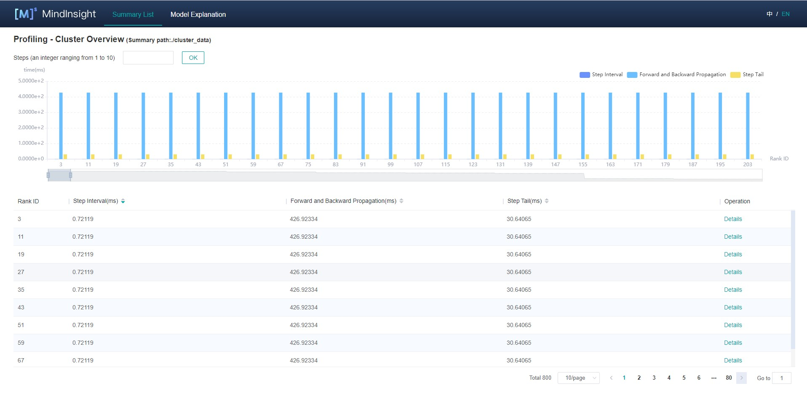

Cluster Performance Profiling (Ascend)
Linux Ascend Model Optimization Intermediate Expert

Overview
This article describes how to use MindSpore Profiler for cluster performance debugging on Ascend AI processors.
Operation Process
Set up the distributed training environment, prepare a training script, add profiler APIs in the training script and run the training script.
Collect Cluster Performance Data.
Start MindInsight and specify the summary-base-dir using startup parameters, note that summary-base-dir is the parent directory of the directory created by Profiler. For example, the directory created by Profiler is
/home/user/code/data/, the summary-base-dir should be/home/user/code. After MindInsight is started, access the visualization page based on the IP address and port number. The default access IP address ishttp://127.0.0.1:8080.Find the cluster training in the list, click the cluster performance profiling link and view the data on the web page.
Distributed Training
For distributed training, please refer to Distributed Training.
Collect Cluster Performance Data
In multi-server and multi-device training, after the cluster training, the performance data is distributed in each host node. To analyze the cluster performance, we need to collect the performance data of all host nodes to one host for analysis. Considering the complexity of the cluster running environment and the related permissions and login problems, a more reasonable way is to let users collect cluster performance data. The following is the process of using a script to collect performance data after a distributed cluster training. Users can refer to this script to collect cluster performance data.
Script program description: the script program first creates the cluster job folder, and then uses the SSHPass technology for non interactive remote copy (to avoid manual authentication, manually enter the password), copies the data of each host node in the cluster to the cluster job folder. At the same time, the script program generates the host IP address mapping table and copies the networking information file of the multi-device environment to the cluster job file.
#!/bin/bash
echo "=============================================================================================================="
echo "Please run the script as: "
echo "bash collect_cluster_profiler_data.sh"
echo "for example: bash collect_cluster_profiler_data.sh cluster_hccl_config_path cluster_account_config_path cluster_train_id host_train_id device_regex output"
echo "=============================================================================================================="
SSH="ssh -o StrictHostKeyChecking=no"
SCP="scp -o StrictHostKeyChecking=no"
# Get the node list in the cluster.
get_cluster_list()
{
local cluster_config=$1
cat ${cluster_config} | python3 -c 'import sys,json;[print(node) for node in json.load(sys.stdin)["cluster"].keys()]'
}
# Get the account number of node.
get_node_user()
{
local cluster_config=$1
local node=$2
cat ${cluster_config} | python3 -c 'import sys,json;print(json.load(sys.stdin)["cluster"]['\"${node}\"']["user"])'
}
# Get the password of node.
get_node_passwd()
{
local cluster_config=$1
local node=$2
cat ${cluster_config} | python3 -c 'import sys,json;print(json.load(sys.stdin)["cluster"]['\"${node}\"']["passwd"])'
}
# Copy data from remote node to local node.
rscp_pass()
{
local node="$1"
local user="$2"
local passwd="$3"
local src="$4"
local target="$5"
sshpass -p "${passwd}" ${SCP} -r "${user}"@"${node}":"${src}" "${target}"
}
cluster_hccl_config_path=$1
cluster_account_config_path=$2
cluster_train_id=$3
host_train_id=$4
device_regex=$5
output=$6
host_ip_mapping_file='host_ips_mapping.txt'
host_ip_mapping_id=1
node_list=$(get_cluster_list ${cluster_account_config_path})
echo "-----begin----"
if [ ! -d "${cluster_train_id}" ]; then
mkdir -p ${cluster_train_id}
fi
# Copy the networking information file of multi card environment to the cluster directory.
cp $cluster_hccl_config_path $cluster_train_id
for node in ${node_list}
do
user=$(get_node_user ${cluster_account_config_path} ${node})
passwd=$(get_node_passwd ${cluster_account_config_path} ${node})
echo "------------------${user}@${node}---------------------"
target_dir=${cluster_train_id}/cluster_profiler/${host_ip_mapping_id}/profiler/
if [ ! -d "${target_dir}" ]; then
mkdir -p ${target_dir}
fi
# Eight card data
for((i=0;i<8;i++));
do
src_dir=${host_train_id}/${device_regex}${i}/${output}*/profiler*/*.*
if [ !$device_regex ]; then
src_dir=${host_train_id}/profiler*/*.*
fi
$(rscp_pass ${node} ${user} ${passwd} "${src_dir}" ${target_dir})
done
# save the mapping information to the host_ips_mapping.txt.
echo "$node $host_ip_mapping_id">>${cluster_train_id}/$host_ip_mapping_file
# host_ip_mapping_id ++
host_ip_mapping_id=$((${host_ip_mapping_id}+1))
done
Script Parameter Description:
cluster_hccl_config_pathNetwork information file path in the multi-device environment. The content format is as follows：{ "version": "1.0", "server_count": "1", "server_list": [ { "server_id": "10.xxx.xxx.1", "device": [ {"device_id": "0","device_ip": "192.1.27.6","rank_id": "0"}, {"device_id": "1","device_ip": "192.2.27.6","rank_id": "1"}, {"device_id": "2","device_ip": "192.3.27.6","rank_id": "2"}, {"device_id": "3","device_ip": "192.4.27.6","rank_id": "3"}, {"device_id": "4","device_ip": "192.1.27.7","rank_id": "4"}, {"device_id": "5","device_ip": "192.2.27.7","rank_id": "5"}, {"device_id": "6","device_ip": "192.3.27.7","rank_id": "6"}, {"device_id": "7","device_ip": "192.4.27.7","rank_id": "7"}], "host_nic_ip": "reserve" } ], "status": "completed" }
cluster_account_config_pathHost node account password configuration file path, The content format is as follows：{ "rank_size": 16, "cluster": { "10.xxx.xxx.1": { "user": "root", "passwd": "xxx" }, "10.xxx.xxx.2": { "user": "root", "passwd": "xxx" } } }
cluster_train_idThe path to save the performance data of the cluster profiler. For example,/home/summary/run1and/home/data/Run2, whererun1andrun2respectively save the jobs of two cluster training.host_train_idDuring cluster training, each host node stores the path of profiler performance data. For example：/home/summary/.device_regexThe name of the folder where the performance data of the profiler is stored on different devices in each host node. For example：/home/summary/device0and/home/summary/device1, which are the folders corresponding to device 0 and device 1. At this time, device_regex is device. If it does not exist, this parameter is not set.outputThe relative path to save the profiler performance file set by the user in the training script, the default is./data.
The collected cluster performance jobs need to conform to the directory structure, otherwise, they cannot be visualized with MindInsight. It must contain the networking information file (the file name is optional) and host_ips_mapping.txt File (file name and suffix are unique).
The directory structure of cluster performance folder collected by script is as follows:
|-- run
|-- hccl.json
|-- host_ips_mapping.txt
|-- cluster_profiler
|-- 1
| |-- profiler
| |-- step_trace_raw_0_detail_time.csv
Cluster performance folder structure description：
hccl.jsonIt is the networking information file of the current multi-device environment. It records the correspondence between host_ip and device_id and rank_id.host_ips_mapping.txtFor host_ip mapping file. From the security point of view, the real host ip needs to be mapped to avoid exposing the real host value, leading to security risks. A host_ip mapping table is maintained here. One line of content in the file represents a set of mappings. For example, 10.xxx.xxx.1 1 means that the mapping value of 10.xxx.xxx.1 is 1.cluster_profilerIt is the label of cluster training job, which is used to judge whether the training job belongs to cluster training job.1Save the performance data of the host node profiler, and it is the single-server multi device Profiler Data. Thecluster_profilerfolder contains performance data for all host nodes in the cluster.
Launch MindInsight
The MindInsight launch command can refer to MindInsight Commands.
Training Performance
Users can select the specified training from the training list and click performance debugging to view the performance data of the training. Cluster training performance includes cluster iterative trajectory analysis and cluster communication performance analysis.
Figure 1: overview of cluster training performance
Figure 1 is the overview of cluster training performance, which is the overall presentation of cluster iterative trajectory component and cluster communication performance component. The display contents of each component are as follows:
Cluster iteration trajectory: The iterative trajectory information of all cards in the cluster is displayed; The overview page shows the cluster iteration trajectory performance.
Cluster communication performance: Show the communication performance of all cards in the cluster and the link performance of the whole network; The overview page shows the cluster communication performance.
Cluster Iterative Trajectory Analysis
Using the cluster iterative trajectory analysis component, we can find out the slow host and slow device in cluster training. Cluster iteration trajectory analysis component shows the iteration information of all devices, including iteration gap, forward and backward, iteration trailing, and supports sorting operation. The iteration gap reflects the speed of the data processing stage, and the iteration gap time of the device can reflect the speed of the corresponding host processing data. The forward and backward time of the device reflects the computing power of the device. Iterative tailing reflects all_reduce time and parallelism.

Figure 2: cluster iteration trajectory analysis
Figure 2 shows the cluster iteration trajectory analysis page. By default, it shows the average performance of the device. It supports querying the iteration trajectory information of the device under a specific step. By clicking the details link in the single device, you can also jump to the detailed performance display page of the single device to query the detailed performance data of the single device.
Figure 3: single device details
Figure 3 shows the performance information of a single device in the cluster. Please refer to single device performance information for the performance information of a single device.
Cluster Communication Performance Analysis
The cluster communication performance component displays the cluster communication performance information from two dimensions: card granularity and whole network link.
Figure 4: cluster communication performance analysis
Figure 4 shows the analysis page of cluster communication performance, including the communication performance of logic card and the link information of the whole network (all logic card link information).
Logic card communication performance tab page is mainly used to show the communication performance of logic card, including communication time, waiting time, logic card link information.
Communication time: Represents the communication time of the communication operator. If the communication time is too long, there may be a problem with a link, and the specific link can be located through the link bandwidth. The calculation method of communication time is to count the total communication operator time of SDMA link (intra server communication) and RDMA link (inter server communication). If it is the SDMA link, the total time of
Reduce inlineandMemcpyoperators is taken as the communication time; If it is the RDMA link, the total time of three consecutive operatorsRDMASendPayload,RDMASendNotify,Notify Waitis taken as the communication time.Waiting time: Also called synchronization time. Before communication between cards, synchronization will be carried out first to ensure that the two cards are synchronized before communication. The waiting time is calculated by counting the total time consumption of all
Notify waitoperators and subtracting the time consumption ofNotify waitoperator in the communication time of RDMA link.Logic card link information: Display the link information of the source card or the destination card. Link information includes communication time, traffic, bandwidth (traffic divided by communication time) and link type. The link types include SDMA link (intra server communication link) and RDMA link (inter server communication link). Click the details and display them by pop-up window.

Figure 5: link information of logic card
The whole network link information tab page displays the link information of all logic cards, and provides the selection of source card, destination card and link type.
Figure 6: link information of the whole network
By default, communication performance data is not collected. You need to use the profile_communication parameter to turn on the communication performance data switch. The example is as follows:
from mindspore.profiler import Profiler
from mindspore import Model, nn, context
# Init context env
context.set_context(mode=context.GRAPH_MODE, device_target='Ascend', device_id=int(os.environ["DEVICE_ID"]))
# Init Profiler
# Note that 'data' directory is created in current path by default. To visualize the profiling data by MindInsight,
# 'data' directory should be placed under summary-base-dir.
profiler = Profiler(profile_communication=True)
# Train Model
Model.train()
# Profiler end
profiler.analyse()
To use MindInsight to visualize communication performance data, you need to install the communication performance data parsing WHL package provided by the supporting software package of Ascend 910 AI processor. The WHL package is released with the supporting software package. Refer to the following command to complete the installation.
pip install /usr/local/Ascend/tools/hccl_parser-{version}-py3-none-any.whl
Resource Utilization
Cluster Memory Analysis
This page shows the memory usage of the model on the device side in the parallel mode, which is an ideal prediction based on the theoretical value. The content of the page includes:
The distribution of cluster devices, which servers and which devices are used.
The peak memory of cluster devices, which is the ratio of peak memory to available memory.
Click a device to jump to the memory details page of the device.
Memory analysis does not support heterogeneous training currently.
Figure 3: The page of cluster memory analysis
Cluster FLOPs Analysis
This page shows the FLOPs data for each device in the parallel mode. The content of the page includes:
The distribution of cluster devices, which servers and which devices are used.
The relative size of FLOPs among cluster devices. The color of the corresponding rectangular block of each device represents the ratio of FLOPs of the current device to the maximum FLOPs of all devices.
Click on a device to jump to the operator time-consuming details page of the device, which contains detailed data for FLOPs.
Figure 4: The page of cluster FLOPs analysis
Specifications
To limit the data size generated by the Profiler, MindInsight suggests that for large neural networks, the profiled steps should be less than 10.
The number of steps can be controlled by controlling the size of training data set. For example, the
num_samplesparameter inmindspore.dataset.MindDatasetcan control the size of the data set. For details, please refer to: https://www.mindspore.cn/docs/api/en/r1.3/api_python/dataset/mindspore.dataset.MindDataset.htmlThe parse of Timeline data is time consuming, and usually the data of a few steps is enough to analyze the results. In order to speed up the data parse and UI display, Profiler will show at most 20M data (Contain 10+ step information for large networks).
Notices
Currently running in PyNative mode is not supported.
Currently the training and inference process does not support performance debugging, only individual training or inference is supported.